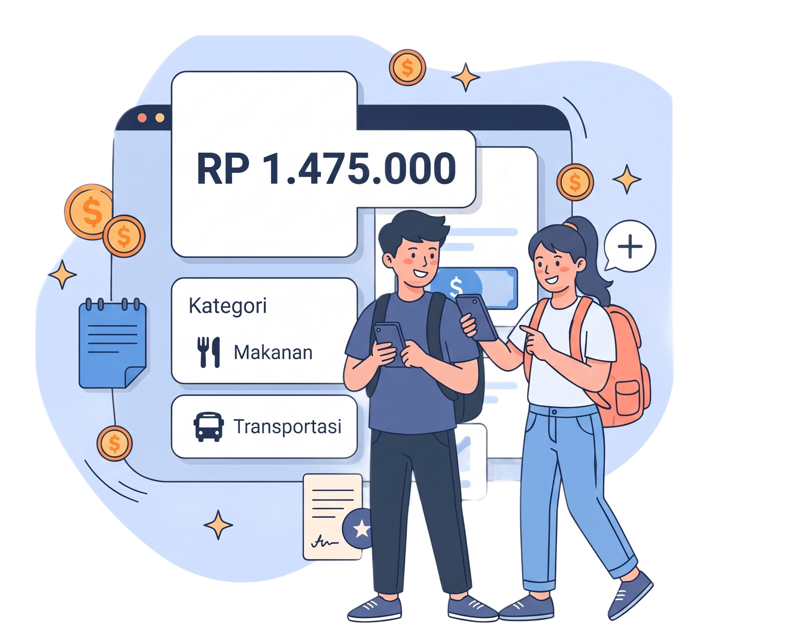

Catat pengeluaran harian
Kelompokan setiap pengeluaran mulai dari makanan,Transportasi,Hingga kebutuhan lainnya dengan cepat.
Solusi praktis pencatat keuangan mahasiswa untuk mengontrol anggaran makanan,transport,dan kebutuhan harian dengan mudah.
